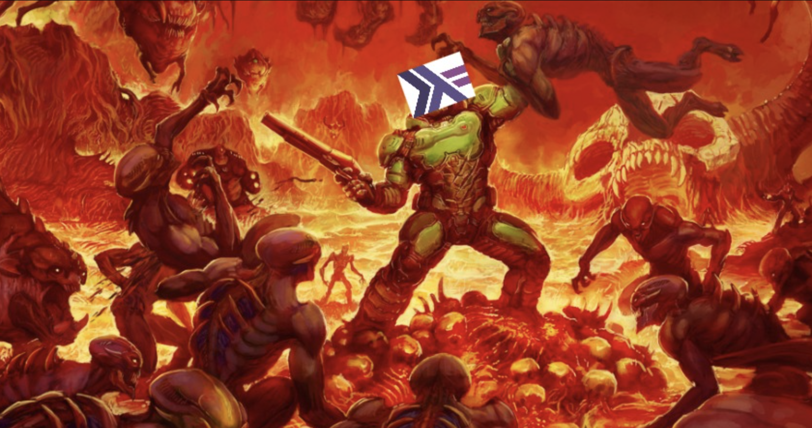

2025/02/28
Escaping Haskell Tooling Hell

People joke about how you need a PhD in mathematics in order to appraoch Haskell, but ironically I have found Haskell tooling to be more painful to work with than its abstractions like Monads (lol). This is most likely just a skill issue on my part, but, alas...
The purpose of this article is to be a reference for myself whenever I start a new Haskell project. TLDR: It looks like the right way to go about managing a Haskell project is to use Cabal with Stackage.
After some tweets and blogposts pointed me in the right direction, I used ChatGPT's Deep Research tool to write a step by step guide for myself. I will share a simplified version of the most straightforward process that worked for me but if you are more interested in everything the o3 model had to say then you can check it out here.
0. Your tools:
- Cabal is the primary build tool and package manager in the Haskell ecosystem.
- Stackage is curated repository of Haskell packages that work well together.
- HLS lets your IDE or text editor know how to specifically support Haskell syntax highlighting, autocomplete, inline errors/warnings, etc.
- Stack is a pain in the ass and something that I hope to avoid altogether for the rest of my life.
- GHCup is what you use to install all the aforementioned tools in the first place.
- As far as I can tell, the onus is on you to figure out which versions of each tool are compatible with each other. Once you have done your research and decided on the versions you will be going with, you can install them all with `ghcup install <tool> <version>`. The `ghcup list` command is your friend during this endeavour.
1. Setting up your project:
- Create your project with `cabal init someProjectNameYouChose` to generate your `someProjectNameYouChose.cabal` file.
- Manually create a `cabal.project` file at the root of your project directory with the following contents:
packages: .
with-compiler: ghc-9.4.8
import: https://www.stackage.org/lts-21.25/cabal.config
The first line in this file tells cabal to include your current directory in the build process. The second line pins the compiler version that you are using. The third line tells cabal which snapshot (ie. curated set of compatible packages) from Stackage to fetch for this project. You need to make sure that this snapshot is compatible with the compiler version you are using.
You can now run `cabal update` to update your package lists followed by `cabal build` to download the Stackage snapshot index you specified and resolve dependencies according.
2. Working on your project:
- Add your dependencies by manually editing your `someProjectNameYouChose.cabal` file. This is done by simply appending the package names to the `build-depends: ` field as seen in the following snippet. If the package listed does not have a specified version constraint then the resolver should default to a compatible version.
build-depends: base ^>=4.17.2.1, text, containers
You can run `cabal build` to resolve and download your updated list of dependencies based on your Stackage snapshot as we did earlier.
A good practice is to also lock your dependency versions with the `cabal freeze` command after you run `cabal build`. This ensures that all the dependency versions that are currently working together in your project will be pinned in an automatically generated `cabal.project.freeze`. Your build should now be reproducible by anyone with access to this `cabal.project.freeze` file.
Note: If you want to update a specific package past the version that is maintained by your current Stackage snapshot (because there might be some critical bug in the current version of package you are using, for instance) then you may need to upgrade to an entirely new Stackage LTS snapshot in order to get that fix.
It is worth giving a healthy disclaimer that while this entire guide works for me as of early 2025, I would not be suprised if this post becomes obselete in the future due to the emergence of a simpler and superior way of managing Haskell dependencies. I am actually hoping for this to be the case. If not, then maybe it will finally be time to take the Nix pill.
< return